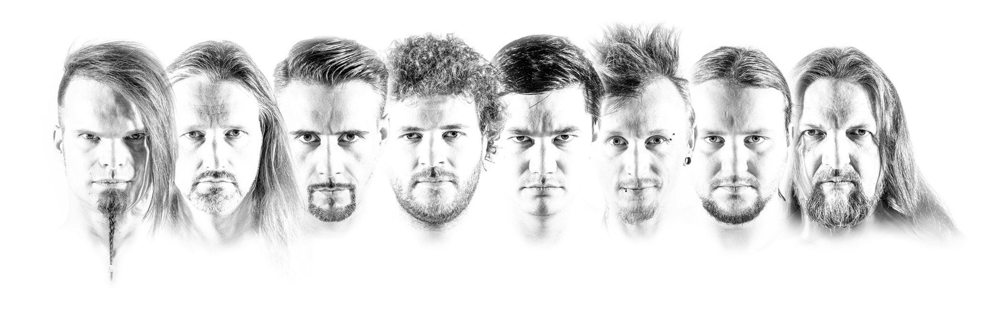

Saltatio Mortis
Saltatio Mortis signifie « Danse de la mort » en latin. Il s'agit d'un groupe de folk metal allemand. Il
s'est formé en 2000. Et la devise du groupe est « Qui danse, ne meurt pas ! ».
Après plusieurs concerts acoustiques sur des marchés médiévaux, le groupe a commencé à expérimenter avec des
instruments de la musique rock et créa bientôt une fusion entre des chansons acoustiques et traditionnelles
et leurs propres chansons modernes. Le groupe s'est donc établit dans le medieval rock allemand autour de In
Extremo, Subway to Sally ou Schandmaul et Ignis Fatuu.
Les membres
- Jörg Roth (Alea der Bescheidene) - chant, cornemuse, guitare acoustique, chalémie, Didgeridoo, bouzouki
- Gunter Kopf (Falk Irmenfried von Hasen-Mümmelstein) - cornemuse, chalémie, vielle à roue, chant
- Timo Gleichmann (Lasterbalk der Lästerliche) - batterie, percussions, Davul, programmation
- Christian Sparfeldt (El Silbador) - cornemuse, uilleann pipes, Great Highland Bagpipe, chalémie, tin whistle, low whistle
- Frank Heim (Bruder Frank) - guitare basse, chapman stick
- Till Grohe (Till Promill) - guitares électrique et acoustique
- Jan S. Mischon (Jean Mechant le Tambour) - batterie, percussions, chant, guitare
- Robin Biesenbach (Luzi das L) - chalémie, cornemuse, tin whistle, low whistle